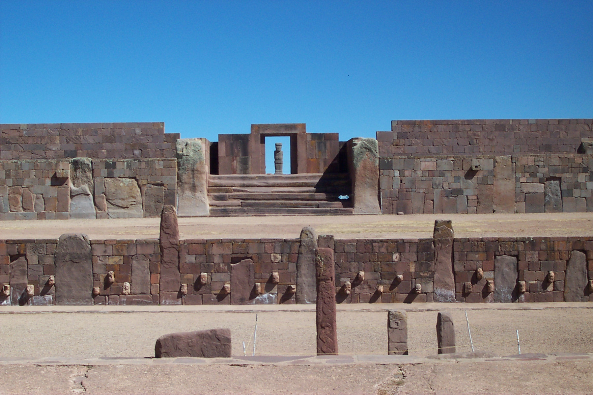

Tiwanaku

Tiwanaku, also known as one of the first settlements for the inca tribe. Researchers believe that Tiwanaku was inhabited by the tribe 1500 B.C. and the first site ever recorded was in 1549 by the spanish conquistador Pedro Cieza de Leon.